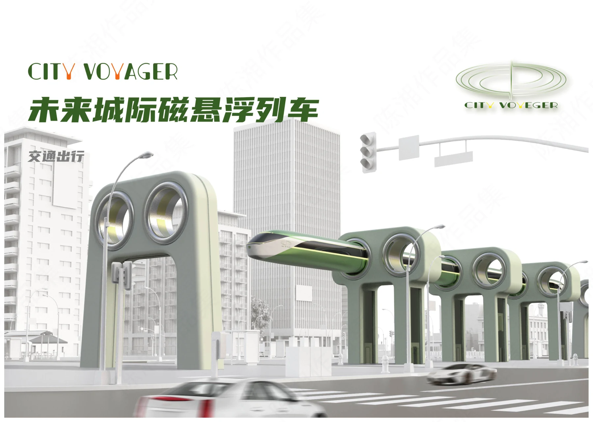
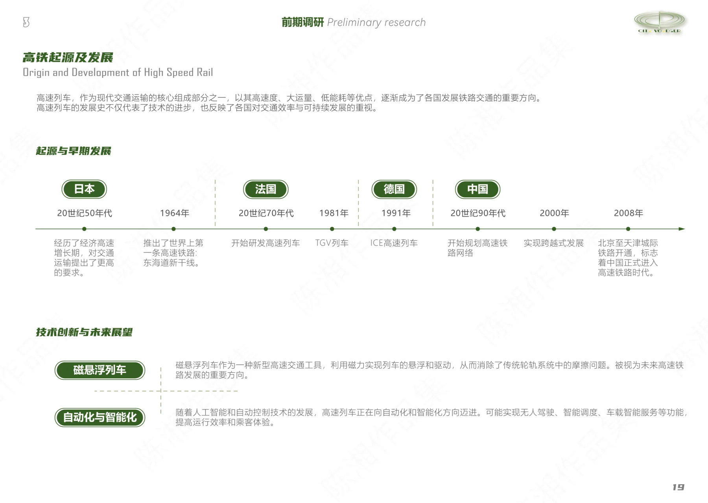
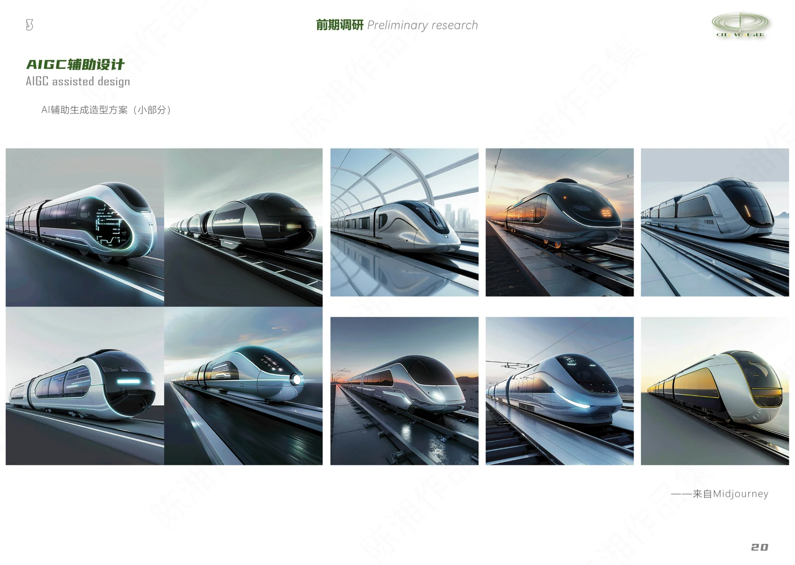
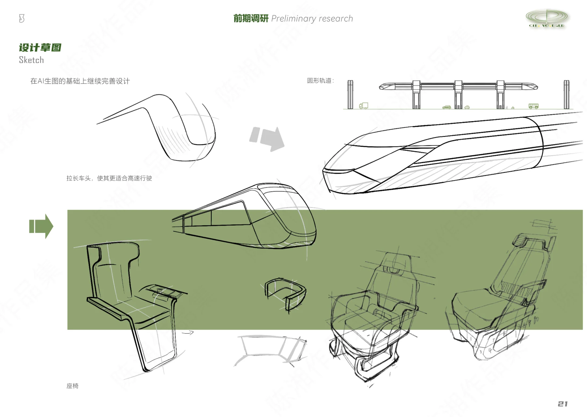
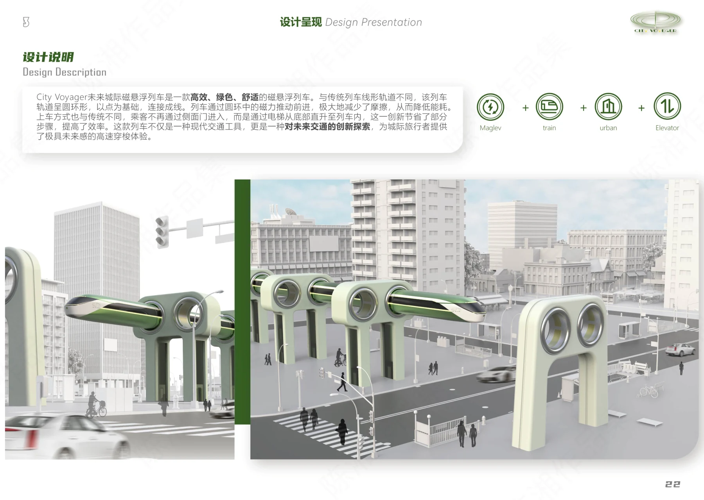
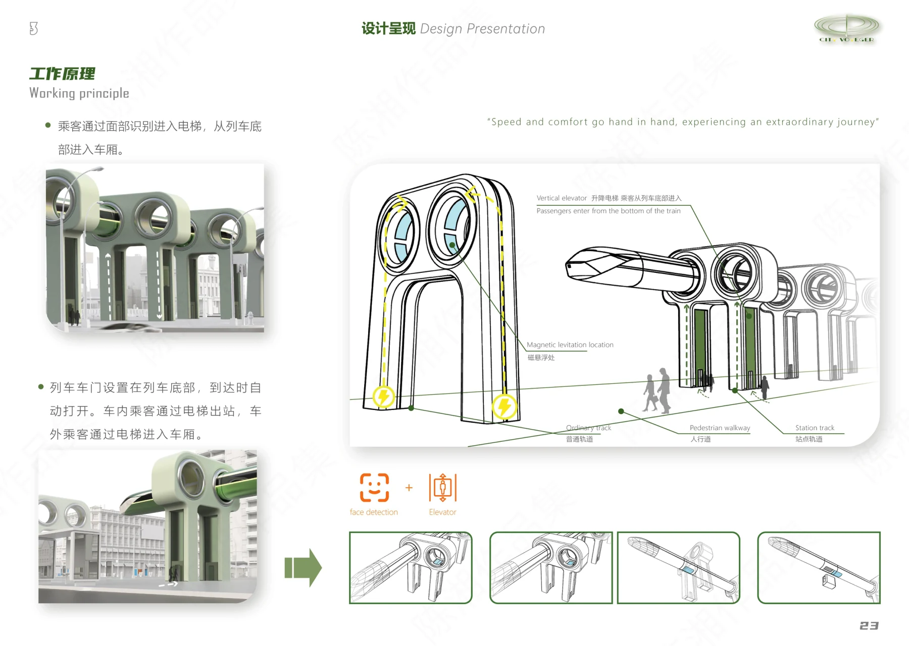
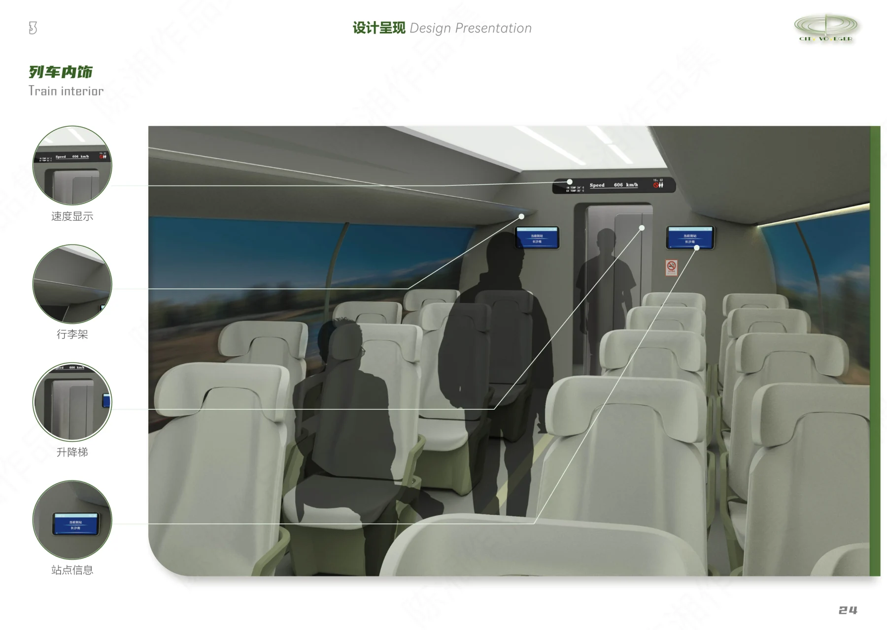
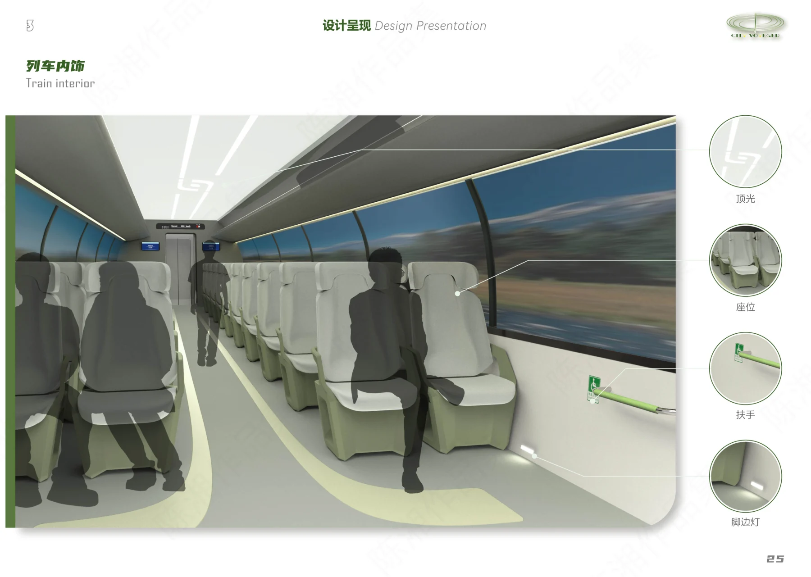
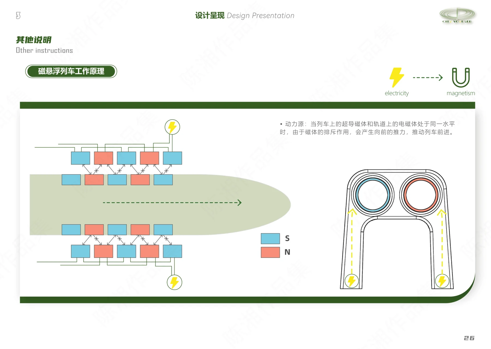

PROJECT 06 / CITY VOYAGER
City Voyager · 未来城际磁悬浮列车
从列车外观到车厢内部，探索未来城际交通的出行体验。

交通场景与技术背景
项目从高速铁路及磁悬浮交通背景切入，思考城际出行中的列车形态、空间与乘坐体验。
辅助发散与方案推演
利用 AIGC 图像进行前期造型探索，结合手绘草图推进外观和空间构思，最终形成列车与配套结构的概念表达。
外观、结构与内部体验
作品集展示列车效果图、工作原理、车厢内部座椅与空间细节，并用图解说明磁悬浮相关构想。此项目为未来交通概念，不作为已验证的交通工程系统。
PROCESS / 设计过程与展板
CLICK TO VIEW FULL SIZE以下为作品集中记录的设计方案与过程。图片可点击放大查看，保留原稿内容与水印。









内容来源：《陈湘作品集-已压缩》第 20—28 页。未明确的项目时间、个人分工及落地结果未作推断。